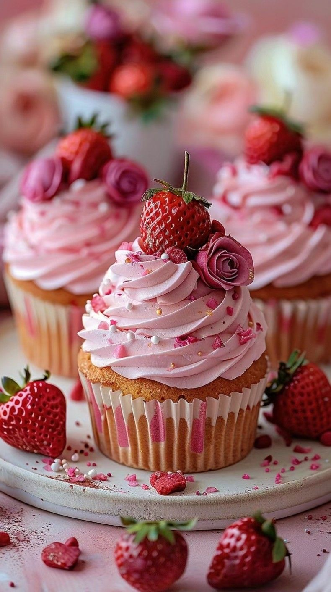

Ingredients
- 1 ½ cups flour
- 1 cup sugar
- 1 ½ tsp baking powder
- ½ cup softened butter
- 2 eggs
- ½ cup milk
- 1 tbsp vanilla
Steps
- Preheat oven to 350°F.
- Whisk dry ingredients.
- Add butter, eggs, milk, and vanilla.
- Mix until smooth.
- Fill cupcake liners ¾ full.
- Bake 18–20 minutes.